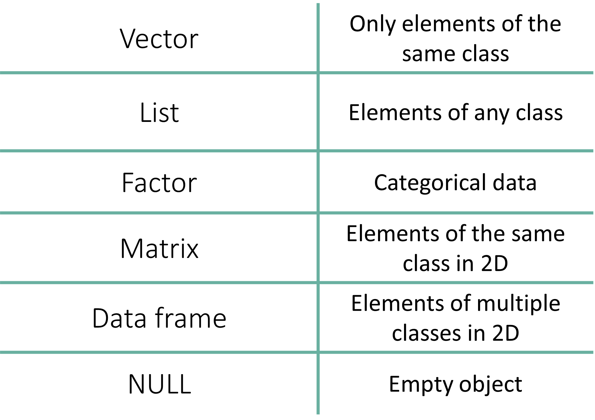
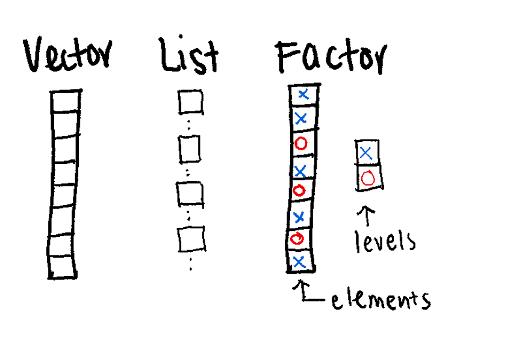
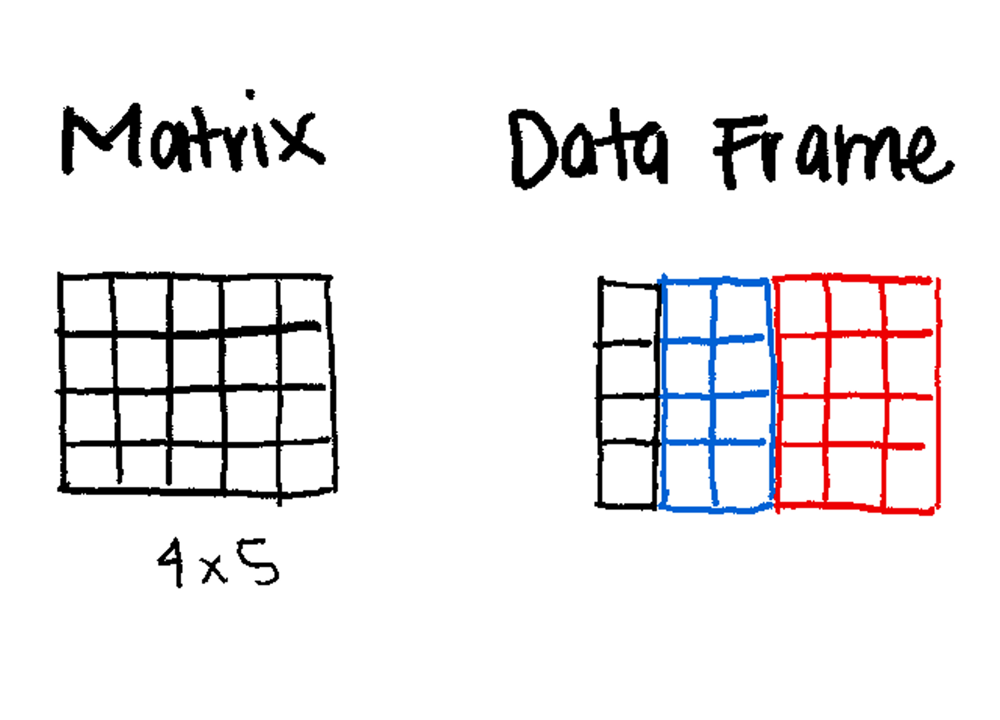
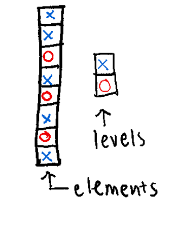
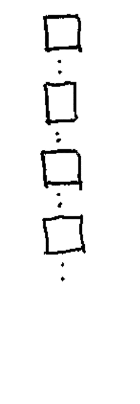
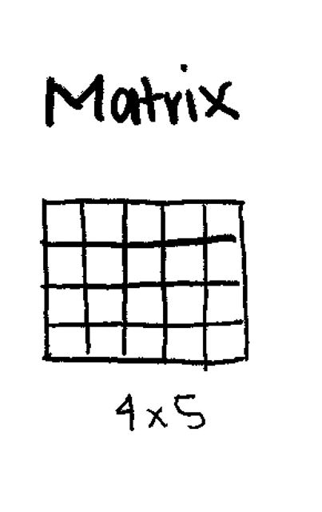
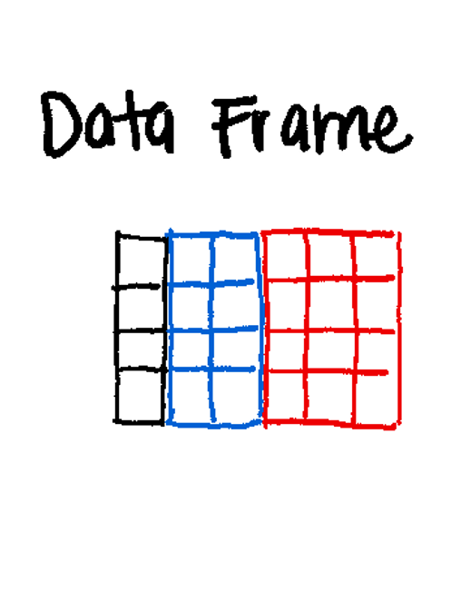

x <- c(0.3, 0.1)
x[1] 0.3 0.1is.vector(x)[1] TRUEIn R, Data Structures are the containers used to store and organize values.
R provides several built-in structures, each designed for a specific purpose. Understanding the difference between them is critical for data analysis.


| Data Structure | Dimensions | Contains Same Type? | Use Case |
|---|---|---|---|
| Vector | 1D | Yes | Simple sequences of numbers or text. |
| Factor | 1D | No (Technically Integers) | Categorical data (groups, treatments). |
| List | 1D | No | Storing complex, mixed objects together. |
| Matrix | 2D | Yes | Mathematical tables (e.g., gene counts). |
| Array | n-D | Yes | Multi-dimensional data (3D+). |
| Data Frame | 2D | No | Standard datasets (rows = samples, cols = variables). |
| NULL | - | - | - |
(Vector, Factor, List) 
(Matrix, Data Frame) 
Key points:
The fundamental building block of R.
The Vector is a 1D sequence.
Can only contain objects of the same class (e.g., all numeric or all character).
Even a single number in R is actually a vector of length 1.
Example of vector: Numeric/integer Vectors, Logical Vectors, Character Vectors.

There are multiple ways to create numeric vectors.
c() (Combine)This is the most common method.
x <- c(0.3, 0.1)
x[1] 0.3 0.1is.vector(x)[1] TRUEc() Function
How should we understand c()?
The Abbreviation: c stands for Combine (or sometimes Concatenate).
The Concept: You can think of c() as a “Glue” or a “Container.” It takes individual, separate values and glues them together into a single, ordered sequence.
Coding Style:
The Comma Rule It is not mandatory to put a space after a comma—both c(0.3, 0.1) and c(0.3,0.1) will work perfectly.
However, much like writing in English, your code is significantly easier for others (and your future self) to read if you consistently place a space after every comma. It makes your code look professional and clean.
vector() or numeric()Creates an empty vector of a specific size (defaults to 0).
x <- vector(mode = "numeric", length = 10)
x [1] 0 0 0 0 0 0 0 0 0 0x <- numeric(length = 10)
x [1] 0 0 0 0 0 0 0 0 0 0seq() and rep()Sequences (seq and rep) are useful for generating data automatically.
# Sequence from 1 to 10, jumping by 2
x <- seq(from = 1, to = 10, by = 2)
x
## [1] 1 3 5 7 9
is.vector(x)
## [1] TRUE
# Repeat the number 2, 10 times
x <- rep(2, 10)
x
## [1] 2 2 2 2 2 2 2 2 2 2
is.vector(x)
## [1] TRUEChecking Vector Length with length()
## Creates an empty vector of length 10
x <- vector(mode = "numeric", length = 10)
x
## [1] 0 0 0 0 0 0 0 0 0 0
length(x)
## [1] 10
# Repeat the number 2, 5 times
y <- rep(2, 5)
y
## [1] 2 2 2 2 2
length(y)
## [1] 5
length(x) == length(y)
## [1] FALSEIntegers are whole numbers. You force them by adding L.
Creating an integer vector using c()
x <- c(1L, 2L, 3L, 4L, 5L)
x[1] 1 2 3 4 5The Colon Operator (:) The quickest way to make an integer sequence.
x <- 1:10
x [1] 1 2 3 4 5 6 7 8 9 10Notes:
You can read the : symbol as “from… to…”
1:10 means “from 1 to 10.”
50:100 means “from 50 to 100.”
Used for True/False conditions.
# You can use TRUE/FALSE or T/F
x <- c(TRUE, FALSE, T, F)
x[1] TRUE FALSE TRUE FALSECreating a logical vector with vector()
x <- vector(mode = "logical", length = 5)
x[1] FALSE FALSE FALSE FALSE FALSECreating a logical vector using logical()
x <- logical(length = 10)
x [1] FALSE FALSE FALSE FALSE FALSE FALSE FALSE FALSE FALSE FALSEText strings must be wrapped in quotes.
x <- c("a", "b", "c")
x
## [1] "a" "b" "c"
# Creates an empty character vector of a specific size (defaults to blank).
x <- vector(mode = "character", length=10)
x
## [1] "" "" "" "" "" "" "" "" "" ""
x <- character(length = 3)
x
## [1] "" "" ""Useful String Functions
# Convert to Lowercase
tolower(c("DNA", "RNA"))
## [1] "dna" "rna"
# Convert to UPERCASE
toupper(letters)
## [1] "A" "B" "C" "D" "E" "F" "G" "H" "I" "J" "K" "L" "M" "N" "O" "P" "Q" "R" "S"
## [20] "T" "U" "V" "W" "X" "Y" "Z"
# Create labels by pasting text and numbers
# Note the implicit coercion
paste("Patient", 1:5, sep = "_")
## [1] "Patient_1" "Patient_2" "Patient_3" "Patient_4" "Patient_5"In R, coercion is the process of forced conversion from one data type to another.
R is automatically changing the Numeric vector (1:5) into a Character vector so it can be “pasted” together with the Character vector (“Patient”).
The Rule of Vectors
As we learned earlier, a vector must contain objects of the same class. You cannot have a single vector that is half-numbers and half-text.
What happens in paste()?
When you run paste("Patient", 1:5, sep = "_"):
“Patient” is a Character vector.
1:5 is an Integer/Numeric vector (1, 2, 3…).
Since you can’t join “text” and “numbers” into a single result without them being the same type, R implicitly (automatically) converts the numbers into text strings (“1”, “2”, “3”).
Why is this important?
In R, there is a “Hierarchy of Types.” If you mix different types in a vector, R will always coerce them to the “least restrictive” type to ensure no data is lost, following this order:
Logical → Integer → Numeric → Character
Example of unexpected coercion:
# Mixing numbers and one "missing" string
data <- c(1.2, 3.5, "missing", 4.8)
# Check the class
class(data)
## [1] "character"
is.numeric(data)
## [1] FALSE # Mixing numbers and one "missing" string
data <- c(1.2, 3.5, "missing", 4.8)
mean(data)Warning in mean.default(data): argument is not numeric or logical: returning NA[1] NAYou can give names to specific elements in a vector. This is great for readability.
x <- 1:5
names(x) <- c("one", "two", "three", "four", "five")
x one two three four five
1 2 3 4 5 x <- logical(length = 4)
names(x) <- c("F1", "F2", "F3", "F4")
x F1 F2 F3 F4
FALSE FALSE FALSE FALSE In R, indices are 1-based, meaning the first item is at position 1. For these examples, we will use a vector of 15 random numbers.
# We set a seed so everyone in the workshop gets the same 15 numbers
set.seed(228)
# Create 15 unique random numbers between 1 and 100
x <- sample(x = 1:100, size = 15, replace = FALSE)
x [1] 84 61 52 40 62 88 49 65 28 18 75 46 83 23 16Reproducible Randomness: set.seed()
The sample() function generates random numbers. Ordinarily, every time you run it, you get a different result. However, in scientific research, we need our results to be reproducible.
The set.seed() function provides a “secret key” (the seed) to the random number generator. As long as two people use the same seed, they will get the exact same “random” numbers every time. The seed can be any number you like—important date, your favorite number, or even a random string of digits.
Fun facts: the number 42 is one of the most popular seeds in the world, appearing in roughly 4% of all public code. This is a nod to Douglas Adams’ The Hitchhiker’s Guide to the Galaxy, where 42 is the “Answer to the Ultimate Question of Life, the Universe, and Everything.”
You can grab a single item or a range of items using square brackets [].
x[1] # Get the first element
## [1] 84
x[13] # Get the thirteenth element
## [1] 83
# Get the first 12 numbers using a sequence
x[1:12]
## [1] 84 61 52 40 62 88 49 65 28 18 75 46
# Get specific positions using a vector of indices
x[c(1, 5, 9)]
## [1] 84 62 28If your vector has names assigned to its elements, you can use those names (as strings) to pull data. This is much safer than numeric indexing because the name stays with the data even if the order changes.
# Assign letters a-o as names to our 15 numbers
names(x) <- letters[1:length(x)]
# Access specific elements by name
x[c("a", "c", "d")] a c d
84 52 40 This is the most powerful way to index. Instead of giving a position, you give R a Logical Vector (TRUE/FALSE). R will only return the items that are TRUE.
# Which numbers are greater than 50?
x[x > 50]
## a b c e f h k m
## 84 61 52 62 88 65 75 83
# Only return numbers that are less than or equal to 30
x[x <= 30]
## i j n o
## 28 18 23 16
# Only return even numbers (using the Modulus operator %%)
x[x %% 2 == 0]
## a c d e f i j l o
## 84 52 40 62 88 28 18 46 16Sometimes you want everything except a few specific items. In R, you do this by using a negative sign - or the Not Equal != operator.
Using Negative Indices:
# Return the vector EXCEPT the 1st and 5th elements
x[c(-1, -5)] b c d f g h i j k l m n o
61 52 40 88 49 65 28 18 75 46 83 23 16 Using Names:
# Return everything EXCEPT the element named "a"
x[names(x) != "a"] b c d e f g h i j k l m n o
61 52 40 62 88 49 65 28 18 75 46 83 23 16 Think of a Factor as a “Smart Character.” It’s a way to tell R: “These words aren’t just text; they are specific categories.”
Key points:
Used for Categorical Data (e.g., “Control” vs “Treatment”).
Levels: The fixed set of possible values.
Can have implicit order, if needed.
Unlike simple text, factors can be ordered.
This is vital for data like cancer stages (Stage I < Stage II < Stage III) or dose levels (Low < Med < High).
Each element has a label or level
Essential for statistical modeling (e.g., defining groups for DESeq2).
Some operations behave differently on factors

Creating Factors: Notice below that we explicitly define the levels. This sets the “order” of the groups (Control first, Case second).
cols <- factor(x = c(rep("red", 4),
rep("blue", 5),
rep("green", 2)),
levels = c("red", "blue", "green"))
cols [1] red red red red blue blue blue blue blue green green
Levels: red blue greensamples <- c("case", "control", "control", "case")
samples_factor <- factor(samples, levels = c("control", "case"))
samples_factor [1] case control control case
Levels: control caseis.factor(samples_factor)[1] TRUEstr(samples_factor) Factor w/ 2 levels "control","case": 2 1 1 2Lists are the most flexible data structure in R. They are 1D containers that can hold anything: numbers, text, or even other lists,.
Key points:
The “Super Container”.
Can contain mixed data types (e.g., a vector, a matrix, and a string all in one object).
The output of most statistical tests (like t.test) is a list.

You can create a list with various data types and assign names to the “pockets” of your backpack for easy access.
my_list <- list(
project_name = "Diabetes Study",
patient_count = 50,
is_finished = FALSE,
group_ids = c("A", "B", "C")
)
my_list$project_name
[1] "Diabetes Study"
$patient_count
[1] 50
$is_finished
[1] FALSE
$group_ids
[1] "A" "B" "C"names(my_list)[1] "project_name" "patient_count" "is_finished" "group_ids" Accessing List Elements:
Use the double bracket [[ ]] or the dollar sign $ for named lists.
my_list[["group_ids"]][1] "A" "B" "C"my_list$project_name[1] "Diabetes Study"One of the most confusing parts of R for beginners is the difference between [] and [[]]. Think of a list as a train carrying cargo:
l[1] (Single Bracket): This returns the train car itself. The result is still a list.
l[[1]] (Double Bracket): This “unzips” the car and returns the actual cargo inside.
For example:
my_list[4]
## $group_ids
## [1] "A" "B" "C"
my_list[[4]]
## [1] "A" "B" "C"lapplyIn bioinformatics, we often have lists of data (e.g., a list of three different gene sets). If you want to perform the same math on every set, you use lapply() (the “List Apply” function).
# Create a list of 3 random sample sets
l <- list(
r1 = sample(1:100, 10),
r2 = sample(1:100, 10),
r3 = sample(1:100, 10)
)
# Apply the sum function to EVERY element in the list
lsums <- lapply(l, sum)
lsums$r1
[1] 557
$r2
[1] 765
$r3
[1] 632lapply always returns a List. If you want a simple vector instead, you can use sapply (the “Simplified Apply”), which is like lapply but tries to tidy the result into a vector for you.
For example:
ssums <- sapply(l, sum)
ssums r1 r2 r3
557 765 632 Key points:
2-Dimensional (Rows and Columns).
Must contain One Data Type (usually all Numeric).
Used heavily in bioinformatics for Gene Expression Tables (Genes × Samples).

Creating a Matrix:
# Create a matrix of numbers 1 through 9, arranged in 3 rows
m <- matrix(1:9, nrow = 3, ncol = 3)
m [,1] [,2] [,3]
[1,] 1 4 7
[2,] 2 5 8
[3,] 3 6 9Adding Row/Column Names:
m <- matrix(1:9, nrow = 3, ncol = 3)
colnames(m) <- c("Sample1", "Sample2", "Sample3")
rownames(m) <- c("GeneA", "GeneB", "GeneC")
m Sample1 Sample2 Sample3
GeneA 1 4 7
GeneB 2 5 8
GeneC 3 6 9When working with matrices—such as a gene expression matrix—it is essential to verify that the dimensions (rows and columns) match your expectations.
In the example below, we create a matrix with 10 elements.
# Create a matrix with 10 numbers, arranged in 5 rows and 2 columns
m <- matrix(1:10, nrow = 5, ncol = 2)
m [,1] [,2]
[1,] 1 6
[2,] 2 7
[3,] 3 8
[4,] 4 9
[5,] 5 10These functions tell you what the object is.
class(): Returns the abstract type of the object (e.g., "matrix", "array").
typeof(): Returns the internal “storage” mode of the data (e.g., "integer", "double").
# Create a matrix with 10 numbers, arranged in 5 rows and 2 columns
m <- matrix(1:10, nrow = 5, ncol = 2)
class(m)
## [1] "matrix" "array"
typeof(m)
## [1] "integer"class() show both “matrix” and “array”?
In R, a matrix is technically just a special case of an array.
Think of it like this:
An Array is the “Grandparent” (it can have 1, 2, 3, or 100 dimensions).
A Matrix is the “Parent” (it is an array that is strictly 2-dimensional).
When you ask for the class, R is telling you: “This object is a matrix, which means it also inherits all the properties of an array.”
typeof(m) “integer” instead of “numeric”?
This is because of the Colon Operator (:) you used to create the data.
In R, the : operator specifically creates Integers (whole numbers) because they take up less memory than “Doubles” (numbers with decimals).
Integer: Whole numbers (1L, 2L, 3L).
Numeric (Double): Numbers that can have decimals (1.0, 2.5, 3.14).
Because your matrix m was built using 1:10, R stored them as integers to be efficient.
These functions tell you how big the object is.
dim(): Returns both the number of rows and columns as a vector.
nrow(): Returns only the number of rows (e.g., the number of Genes).
ncol(): Returns only the number of columns (e.g., the number of Samples).
m <- matrix(1:10, nrow = 5, ncol = 2)
dim(m)
## [1] 5 2
nrow(m)
## [1] 5
ncol(m)
## [1] 2str()The str() (structure) function is perhaps the most useful tool for a researcher. It provides a compact summary of the class, the dimensions, the data type, and a preview of the first few values all in one line.
m <- matrix(1:10, nrow = 5, ncol = 2)
str(m) int [1:5, 1:2] 1 2 3 4 5 6 7 8 9 10Key points:
Similar to a matrix, but can have more than 2 dimensions (3D, 4D, etc.).
Useful for time-series data or 3D imaging data.
# Create a 3D array (2 rows, 2 columns, 2 "slices")
a <- array(1:8, dim = c(2, 2, 2))
a, , 1
[,1] [,2]
[1,] 1 3
[2,] 2 4
, , 2
[,1] [,2]
[1,] 5 7
[2,] 6 8Key points:
The most common data structure for researchers.
2-Dimensional (like a matrix).
Can mix data types (e.g., Column 1 is Numeric, Column 2 is Character).
Columns in data frames are vectors
A data frame is essentially a list of vectors
Think of it like an Excel Spreadsheet.

The Three Rules of Data Frame Anatomy
1. The Column Rule (The Vector)
Every column in a data frame is a Vector.
This means that within a single column (like Age or Gene_Expression), every single entry must be the same data type. You cannot have a number in row 1 and a word in row 2 of the same column.
2. The Row Rule (The List)
The data frame itself is a List where each element of the list is one of those columns.
Because a list can hold different types of objects, your first list element (Column 1) can be “Numeric” and your second list element (Column 2) can be “Character.”
3. The Alignment Rule (The “Rectangle”)
This is the only way a Data Frame differs from a standard List:
In a List, you can have one vector of length 10 and another vector of length 500.
In a Data Frame, R forces a “Rectangular” constraint. Every column (vector) must have the exact same length.
Creating a Data Frame:
df <- data.frame(
ID = c("P001", "P002", "P003"),
Age = c(25, 34, 28),
Treatment = c("Placebo", "Drug", "Placebo")
)
df ID Age Treatment
1 P001 25 Placebo
2 P002 34 Drug
3 P003 28 Placebodf <- data.frame(
ID = c("P001", "P002", "P003"),
Age = c(25, 34, 28),
Treatment = c("Placebo", "Drug", "Placebo")
)
class(df)
## [1] "data.frame"
typeof(df)
## [1] "list"
dim(df)
## [1] 3 3
str(df)
## 'data.frame': 3 obs. of 3 variables:
## $ ID : chr "P001" "P002" "P003"
## $ Age : num 25 34 28
## $ Treatment: chr "Placebo" "Drug" "Placebo"
head(df)
## ID Age Treatment
## 1 P001 25 Placebo
## 2 P002 34 Drug
## 3 P003 28 Placebo| Function | What it tells you | Why it matters |
class() |
The high-level structure. | Confirms you have a data.frame and not just a simple list or matrix. |
typeof() |
The internal Storage Type. | Reveals how R stores the data in your computer’s memory. For a data frame, this will return "list", because a data frame is technically a list of equal-length vectors. |
dim() |
The Dimensions (Rows, then Columns). | Crucial. Tells you how many samples (rows) and variables (cols) you have. |
str() |
The internal structure. | Shows the data type of every column at once (e.g., is Age numeric or text?). |
head() |
The first 6 rows. | A “sanity check” to see if the data looks like you expected. |
tail() |
The last 6 rows. | Useful for checking if the file ended correctly or has “junk” at the bottom. |
You can rename a specific column by targeting its index (its position number).
# Let's rename the 3nd column to "Group"
df <- data.frame(
ID = c("P001", "P002", "P003"),
Age = c(25, 34, 28),
Treatment = c("Placebo", "Drug", "Placebo")
)
colnames(df)[3] <- "Group"
# Check the change
head(df) ID Age Group
1 P001 25 Placebo
2 P002 34 Drug
3 P003 28 PlaceboThere are three main ways to pull data out of a data frame. Think of this as giving R an “address” to find your data.
$)The most common way to grab a single column by its name. This returns a vector.
df$ID[1] "P001" "P002" "P003"[ ])This returns a data frame containing only that column.
df["Age"] Age
1 25
2 34
3 28[row, col])This is the most precise method. You provide the Row number, then a comma, then the Column number.
df[1, ]: The 1st Row (all columns).
df[, 1]: The 1st Column (all rows).
df[3, 2]: The specific value at Row 3, Column 2.
df[,3][1] "Placebo" "Drug" "Placebo"which()This is how you “filter” your data based on conditions. The which() function tells R the index numbers that meet your criteria.
df[which(df$ID %in% c("P002", "P003")), ] ID Age Group
2 P002 34 Drug
3 P003 28 PlaceboHow to read the “Subsetting Sandwich”
Think of the line df[which(df$ID %in% c("P002", "P003")), ] as a three-layer process. R evaluates this from the inside out.
Layer 1: The Question (%in%)
df$ID %in% c("P002", "P003") R looks at the ID column and asks: “Is the value in this row either P002 or P003?”
The Result: A Logical Vector like [FALSE, TRUE, TRUE, FALSE, ...].
Layer 2: The Address Finder (which)
which(...) R takes those TRUE/FALSE values and converts them into index numbers (row numbers). If the 2nd and 3rd rows were TRUE, which() returns the numbers 2 and 3.
The Result: An Integer Vector like [2, 3].
Layer 3: The Grabber ([row, col])
df[2:3, ] Finally, R uses those numbers as the Row Address.
The comma is the most important part! By leaving the space after the comma blank, you are telling R: “Give me all columns for these specific rows.”
Why does the Comma do?
df[rows , ] → “I want these rows, and keep all the columns.”
df[ , cols] → “I want all the rows, but only these columns.”
Coercion is the act of forcing an object to change from one structure or type to another. We use the as. family of functions to do this.
This is a very common workflow: you collect various results in a list and then “solidify” them into a rectangular data frame for plotting or saving.
# 1. Create a list with two vectors of equal length
l <- list(numbers = 1:10, lowercase = letters[1:10])
# 2. Check type
typeof(l)
## [1] "list"
# 3. Coerce the list into a data frame
df <- as.data.frame(l)
# 4. Observe the change
typeof(df)
## [1] "list"
head(df)
## numbers lowercase
## 1 1 a
## 2 2 b
## 3 3 c
## 4 4 d
## 5 5 e
## 6 6 fKey points:
NULL represents the absence of an object.
It is different from NA (which means “missing value”).
NULL is often used to remove an element from a list or dataframe.
x <- NULL
is.null(x)[1] TRUER has many functions to inspect and summarize these objects.
Use these to check what you are working with.
x <- c(1, 2, 3)
is.vector(x) # Is it a vector?
## [1] TRUE
is.na(x) # Is it empty
## [1] FALSE FALSE FALSE
is.null(x) # Is it NULL
## [1] FALSE
is.numeric(x) # Is it numeric
## [1] TRUE
is.logical(x) # Is it logical
## [1] FALSE
is.character(x) # Is it character
## [1] FALSE
length(x) # How long is it?
## [1] 3
class(x) # What class is it? Atomic class type
## [1] "numeric"
typeof(x) # Object type or data structure (matrix, list, array...)
## [1] "double"
str(x) # Structure (Compact display)
## num [1:3] 1 2 3Use these to calculate statistics on your vectors.
x <- seq(1, 10, 0.3)
min(x)
## [1] 1
max(x)
## [1] 10
mean(x) # Average
## [1] 5.5
median(x) # Median
## [1] 5.5
sd(x) # Standard Deviation
## [1] 2.727636
summary(x) # Quick summary stats
## Min. 1st Qu. Median Mean 3rd Qu. Max.
## 1.00 3.25 5.50 5.50 7.75 10.00
table(x)
## x
## 1 1.3 1.6 1.9 2.2 2.5 2.8 3.1 3.4 3.7 4 4.3 4.6 4.9 5.2 5.5 5.8 6.1 6.4 6.7
## 1 1 1 1 1 1 1 1 1 1 1 1 1 1 1 1 1 1 1 1
## 7 7.3 7.6 7.9 8.2 8.5 8.8 9.1 9.4 9.7 10
## 1 1 1 1 1 1 1 1 1 1 1tapply)A powerful function to apply a calculation to groups of data (e.g., “Find the mean measurement for Cases vs. Controls”).
# Mock data: 6 measurements
measurements <- c(10, 12, 11, 20, 22, 21)
# Groups: 3 Controls, 3 Cases
groups <- factor(c("Control", "Control", "Control", "Case", "Case", "Case"))
# Calculate the mean for each group
tapply(measurements, groups, mean) Case Control
21 11 Understanding tapply()
Think of tapply() as an automated assembly line that follows three steps: Split, Apply, and Combine.
Usage: tapply(X, INDEX, FUN = NULL, ..., default = NA, simplify = TRUE)
The Break-Down:
Using the example: tapply(measurements, groups, mean)
Data: measurements
Split (The INDEX): R looks at the groups factor. It sees two levels: “Control” and “Case”. It then “splits” the measurements into two separate piles based on those labels.
Pile 1 (Control): 10, 12, 11
Pile 2 (Case): 20, 22, 21
Apply (The FUN): It then takes the function you provided (mean) and goes to each pile individually to calculate the result.
Mean of Pile 1 = 11
Mean of Pile 2 = 21
Combine (The Result): It glues those two results back together.
sapply, lapply, tapplyThe main difference between these functions is what they take in (Input) and what they give back (Output).
| Function | Input | Output | Purpose (“In Plain English”) |
lapply |
List or Vector | List | “Apply this to every item and keep it in a list.” |
sapply |
List or Vector | Vector/Matrix | “Apply this to every item and simplify the result.” |
tapply |
Vector + Factor | Array/Vector | “Group my data by a tag and then calculate.” |
R is vectorized, meaning mathematical operations are applied to every element at once.
x <- 1:5
y <- 6:10
# Multiply every element in x by 2
x * 2
## [1] 2 4 6 8 10
# Add x and y (element by element)
x + y
## [1] 7 9 11 13 15Navigating data in R depends on whether your object is 1-Dimensional (linear) or 2-Dimensional (rectangular). Indexing is the most frequent source of errors for beginners, so here is the master cheat sheet for finding your data.
Before looking at specific structures, remember these three core rules of R:
[1], not [0].[]: These are the “envelopes” used to hold your address.[-1]) means “Give me everything except this position.”| Structure | Dimension | Primary Method | Example | Result |
|---|---|---|---|---|
| Vector | 1D | [ x ] |
v[1:3] |
Returns the first 3 elements. |
| Factor | 1D | [ x ] |
f[1] |
Returns the first element + its levels. |
| List | 1D | [[ x ]] or $ |
l[[1]] |
Returns the content of the first “drawer.” |
| Matrix | 2D | [row, col] |
m[1, 2] |
Value at Row 1, Column 2. |
| Data Frame | 2D | $ or [row, col] |
df$age |
Returns the entire “age” column as a vector. |
[row, col])Used for Matrices and Data Frames. The comma is the most important part!
df[1, 5]: Specific cell (Row 1, Col 5).df[1, ]: Entire Row (Leave the column space empty).df[, 5]: Entire Column (Leave the row space empty).Because a Data Frame is technically a “list of vectors,” it is the most flexible structure for indexing.
df <- data.frame(
ID = c("P001", "P002", "P003"),
Age = c(25, 34, 28),
Treatment = c("Placebo", "Drug", "Placebo")
)
# By Name ($) — Fast and readable
df$Treatment
# By Position — Useful when you don't know the names but know the order
df[, 1]
# By Logical Mask — Returns all rows where the Age is over 50
df[df$Age > 50, ]